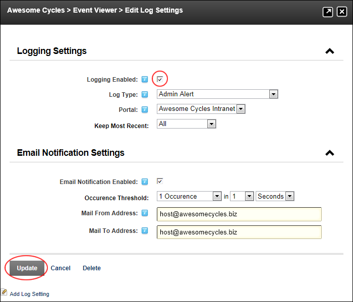

- Mark
 the check box to enable logging of this event.
the check box to enable logging of this event. - Unmark
 the check box to disable logging of this event. This disables all fields in the Logging Settings section.
the check box to disable logging of this event. This disables all fields in the Logging Settings section.
How to enable or disable any logged event on the Log Viewer module. Restricted to SuperUsers.
